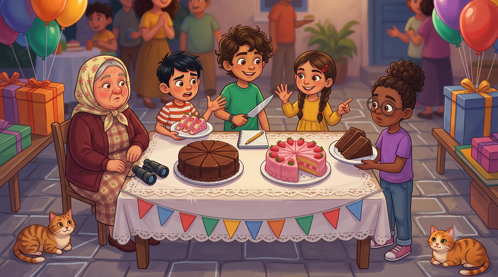
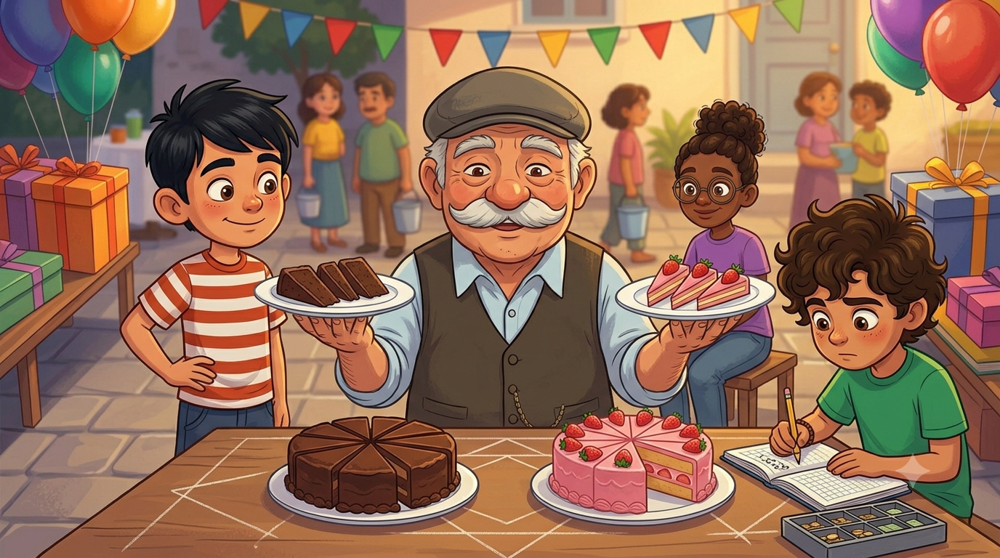
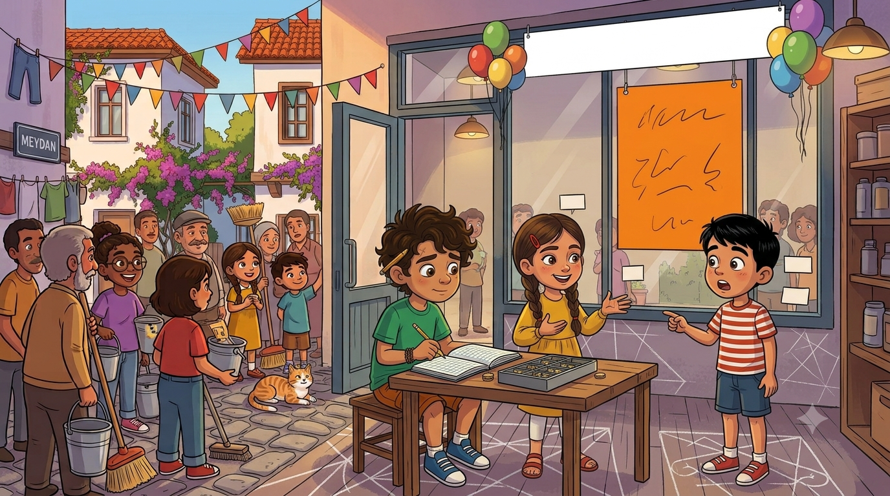

Mübeccel Teyze'nin doğum günü! Ortada iki pasta var: biri 8, biri 10 dilim. Herkese "üçer dilim" verilince kıyamet koptu: üç dilim her zaman üç dilim müdür? Üstüne bir de çarşıya "biz daha ucuzuz" diyen yeni market açıldı. Kesirleri karşılaştırmayı bilmeyen, bu mahallede ne pasta yiyebilir ne alışveriş yapabilir!
Mübeccel Teyze'nin doğum günü olduğunu nereden mi öğrendik? Kendisi balkondan duyurdu: "Yarın doğum günüm. Kutlama beklemiyorum ama saat üçte evde olacağım, kapı açık, pasta seven gelsin." Bu, bizim mahalle dilinde "büyük kutlama istiyorum" demektir. Mahalle seferber oldu.
Elif'le ben pasta işini üstlendik. İki pasta yaptık — yani Elif yaptı, ben hayati önem taşıyan karıştırma ve tadına bakma görevlerini yürüttüm. Çikolatalı pastayı 8 eş dilime, çilekli pastayı 10 eş dilime böldük. Parti başladı, ben de dilim dağıtımına giriştim: herkese birinden üçer dilim. Adil, değil mi? Üç, üçe eşittir sonuçta.
Değilmiş. Emre iki tabağı yan yana koydu, gözlerini kısıp baktı: "Bir dakika. Ayşe'nin çikolatalı dilimleri benim çilekli dilimlerimden BÜYÜK!" Ayşe itiraz etti: "İkimiz de üç dilim aldık!" Emre tabağı havaya kaldırdı: "Dilim sayısı aynı ama dilimin kendisi aynı değil!" Ortalık karıştı. Mübeccel Teyze pastasının başında, kaşları havada, hakem gibi bekliyordu. Onuncu unvanım da böyle geldi: "Adil Paylaşım Genel Sorumlusu." Doğum günü hediyesi niyetine.

Dedem iki tabağı önüne aldı; kasketini kaldırdı, dilimlere baktı. "Emre haklı," dedi. Emre hayatında ilk kez resmî olarak haklı çıkıyordu; heyecandan ayağa kalktı. "Ayşe'nin yediği çikolatalıdan 3 dilim: pastanın 8'de 3'ü. Emre'ninki çilekliden 3 dilim: pastanın 10'da 3'ü. Paylar aynı — üçer dilim — ama paydalara bakın: 8 ve 10."
Elif kuralı tamamladı: "Bir pastayı ne kadar ÇOK parçaya bölersen, parçalar o kadar KÜÇÜLÜR. Yani paylar eşitse, paydası küçük olan kesir büyüktür: 3/8 > 3/10!" Emre bunu duyunca durdu, düşündü, sonra dahiyane sorusunu sordu: "Peki ya aynı pastadan farklı sayıda dilim alsaydık?" Elif güldü: "O kolay: paydalar eşitse payı büyük olan büyüktür. Beş dilim üç dilimden çoktur, onu horoz bile bilir." Horoz penceredeydi; onayladı mı bilmiyorum ama itiraz da etmedi.
Sorunu çözdük: dilim büyüklüğü dert olmasın diye herkes iki pastadan da eşit sayıda küçük dilim aldı; artan dilimleri de Mübeccel Teyze "denetim payı" olarak kendine ayırdı. Doğum günü kızına itiraz edilmez.
🍰 Defterime not aldım:Paydalar eşitse → payı büyük olan büyüktür: 7/12 > 5/12. Paylar eşitse → paydası KÜÇÜK olan büyüktür (parçası iri!): 3/8 > 3/10.

Ertesi hafta çarşıya yeni bir market açıldı. Açılışta davul zurna vardı; vitrine de kocaman bir pankart asmışlardı: "HER ŞEY DAHA UCUZ!" Mübeccel Teyze buna balkondan tek cümleyle cevap verdi: "Onu hesap bilen anlar." Ve mahalle, tarihinin ilk fiyat karşılaştırma seferberliğine başladı. Görev kimin? Adil Paylaşım Genel Sorumlusu'nun tabii.
Elif'le elimizde defter, iki market arasında mekik dokuduk. Süt: bizim bakkalda 22,10, yeni markette 21,99. "21,99 küçük, yeni market ucuz," yazdım. Çay: bizde 90,25, onlarda 90,5. Emre hemen atıldı: "90,5 daha ucuz! 5, 25'ten küçük!" Elif durdurdu: "Tuzak! 90,5 demek 90,50 demek. Virgülden sonrasını aynı basamağa tamamla: 50 ile 25... 90,5 daha PAHALI!" Emre'nin dünyası bir kez daha sarsıldı: "Yani sayının kısası ucuza gelmiyor muymuş?"
Bir tuzak daha: peynir etiketinde bizde 145,90, onlarda 145,9 yazıyordu. Ben tam "farklı" diyecektim ki kendimi tuttum, basamakları tamamladım: 145,90 = 145,9. Aynı fiyat! Defterime yazarken dedemin sesini duyar gibiydim: "Aşağı yukarı bilen, kesin hesapta şaşmaz."
🛒 Defterime not aldım: Ondalık gösterimleri karşılaştırırken önce tam kısımlara bak; eşitse ondalık kısmı aynı basamak sayısına tamamla: 90,5 = 90,50 > 90,25 ve 145,9 = 145,90. Kısa yazılmış sayı küçük demek değildir!
Karşılaştırma listemiz iki gün sonra hazırdı: bazı ürünler yeni markette, bazıları bizim bakkalda ucuzdu; birkaç tanesi de birebir aynıydı. Listeyi muhtarlık panosuna astık; başlığını Elif yazdı: "Kuruşun Hakkını Koruma Listesi." Mahalleli panonun önünde kuyruk oldu. Yeni marketin sahibi bile gelip baktı; "Vay be," dedi, "bu mahalleyle pazarlık zor." Dedem içeriden seslendi: "Biz pazarlık etmeyiz, karşılaştırırız."
Akşam dedem bana pasta gününden kalan soruyu sordu: "Peki evlat, 3/8 ile 5/8'i nasıl karşılaştırırsın?" — "Paydalar eşit, payı büyük olan: 5/8." — "3/8 ile 3/10?" — "Paylar eşit, paydası küçük olan: 3/8." — "22,10 ile 21,99?" — "Tam kısımlar: 22 ile 21. 21,99 küçük." Dedem kasketini çıkarıp önüme koydu. İkinci madalya törenim. "Terazi artık sende," dedi.
Tam o sırada muhtar geldi; elinde mühürlü bir zarf: "Sayın Adil Paylaşım Sorumlusu! Panoya asılan listeye itirazlar olmuştur! Tüm karşılaştırmalar huzurda, tek tek doğrulanacaktır!" Mahalle meydanında, herkesin önünde... Terazi sınavı başlıyor.
⚖️ Defterime not aldım: Karşılaştırmanın üç aleti: kurallar (payda eşit / pay eşit), sayı doğrusu (sağdaki her zaman büyüktür) ve basamak tamamlama (ondalıklar için). Terazi şaşmaz!

Terazi Sınavı! 🎯
İtirazlar tek tek geliyor. Her karşılaştırmada doğru cevabı seç, listenin namusunu koru!
⭐ Puan: 0❓ Soru: 1/5
⚖️ İtirazlar Reddedildi!
Beş itirazın beşi de çürütüldü. Muhtar zarfı mühürleyip panoya astı: "Liste doğrudur, itiraz eden önce kesir öğrensin." Mübeccel Teyze balkondan alkışladı; yeni market ertesi gün üç ürüne indirim yaptı. Mahalle kazandı.
Kâşif Defteri — bugün öğrendiklerimiz:
• Paydalar eşitse → payı büyük olan büyük: 5/8 > 3/8
• Paylar eşitse → paydası küçük olan büyük: 3/8 > 3/10
• Ondalıkta önce tam kısım, sonra basamak tamamlama: 90,5 = 90,50
• 145,9 = 145,90 — kısa yazım küçük demek değil!
• Sayı doğrusunda sağda olan her zaman büyüktür